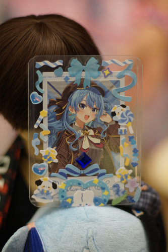

Here's the second con of the year I learned about less than a week before! Kohi messaged me on Wednesday and we decided to go together. We tipped off our friends Maullar and Teezan that it was happening.
What is MochiPop? Well, according to their website, it is a celebration of kawaii and k-pop. I looked through the site for a way to contact the organizers, but only found links to TikTok and Instagram. The cost for entry at this convention is $10 and it is located on a college campus.
I would love to know what k-pop has to do with anime, but no one seems to know. Luckily, I have a bias now and he is Rose from The Traxx, so I should pass any test on the way in the door. Do they print photocards of this dude? I'd buy a few.
Kohi and I got into our best lolita coords and headed over! We saw no deer on the drive into campus. I think Evergreen's campus has set us up for disappointment. I did witness 4 squirrels around a pile of seeds, which was quite cute.
Kohi and I arrived late to the con at 1 PM and ran in to registration to get our badges. I paid them $20 cash for 2 badges, no paperwork involved. The badges were little sheets of paper saying the name of the con and "attendee" on in a badge holder with a lanyard. There were 0 badge checks so I'm not sure they were needed except for honesty. There were no questions about your k-pop bias needed for entry.
The campus didn't feel very large. The singular panel room was a very short walk away in the library building which had a lecture hall for a relatively small class size. It was about the size of my 300 level classes at a university.
Kohi learned about this con from her friend Miracle, who had a panel for her series Lyrical Rollerskater Magical Melody. She and her team were very passionate about their project! It was cute to listen to them talk about it. I won't be able to watch the series because it's uploaded on TikTok and Instagram, but Miracle says it will be on YouTube as well in the future. I wasn't sure what a rollerskate fight scene would look like, but it actually turned out to be a cool concept for choreography.
Cast member Brys said during the panel something along the lines of "Can't sing? Don't sing. Can't dance? Don't dance. Can't draw? Don't draw. You can still make your dreams happen!" I thought those were just shy of very inspiring words, but I disagree! Everyone please get to work on doing the things you want to do instead of saying they're too hard! Draw!!! Dance!!! Sing!! You can do them if you practice and work hard! Don't put off trying for tomorrow either.
At the Magical Melody panel, we located our buddy Maullar who was helping out filming the panel. One of Kohi's friends also arrived at the panel and they didn't recognize each other because neither of them normally wear lolita but they were both wearing lolita today!
The college Anime Club had a white board for everyone to write down their favorite anime character.
We perused the wares of the the vendors for a bit. I didn't find anything I needed, but it's rare that I ever do. I did find a free photocard of Josh from Seventeen, which I took! I didn't see any Rose merch, unfortunately. My favorite find was my friend, Teezan!
The vendor hall was two levels. There were just a few booths upstairs and a larger number downstairs. This was much smaller than ChibiChibiCon, who had a full gymnasium of booths.
We walked past a cosplay contest and dance crew on the stage upstairs.
We found a Maid in Abyss cosplayer (I think...) This was an awfully big costume to walk around in without a handler!
MochiPop Con had a game room with a DDR arcade machine (and 2 more music games, not pictured).
Miracle had a booth with lots of cute merch! I really liked the enamel pins.
I gave one of my precious Hina stickers to Miracle because I have no friends to give them all to. She said we are friends now, but I don't have any way to contact her without IG or Tiktok! What has this world come to!!! I'll see you at Kumoricon, Miracle!
Our group headed back up to the k-pop photocard trading and decoration room, when we learned we were late for the decoden workshop! We ran over and nearly everyone at the convention was already in the room, so the boiz and I headed back to the photocard room. We drew together for Inktober and then Teezy and I got to work on decorating toploaders!

So many stickers that were free to use!!
There were inspiration and examples of toploader designs in a binder. I liked this idea for your OTP of choice.
Kohi made a Suisei toploader for Maullar!
Here are the toploaders I made it home with. Teezy made two of them for me.
And the beautiful art that Teezy left in my sketchbook. I brought a second one for him because I knew he would forget to bring one for himself!
We ended up spending nearly half the con chatting, drawing, and decorating in the k-pop card room. It turned out to be a great spot to hang out and enjoy time with your friends!
We packed up to leave at the closing time of 8PM. The favorite anime character board had been wiped since we were last there and redone with more drawings.
Someone else on this earth loves Komasan?!
There was an Itachi itasha in the parking lot owned by Sharingan5689, who was taking photos at the convention as well!
I think one of their major issues of this con was advertising. None of the people I spent time with would have gone if they had not seen (directly or indirectly) Miracle posting that she was a panelist there. As far as I can tell, this is a first year con, so hopefully next year they can improve on getting their name out.
Overall, it was a good con! I had a lot of fun with my friends and I'd love to go next year.